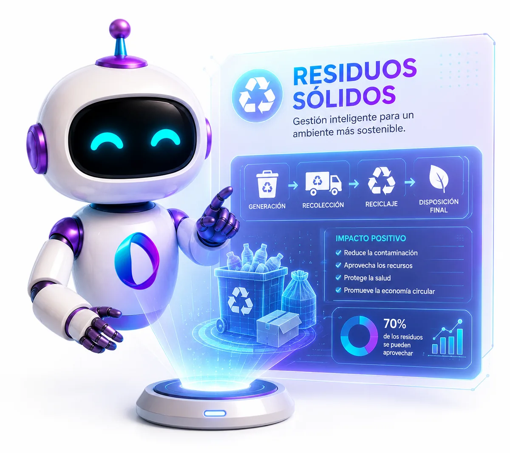
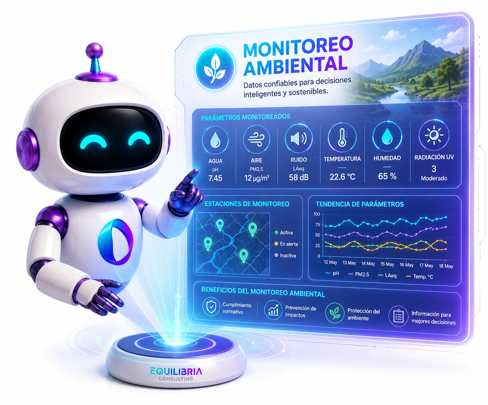
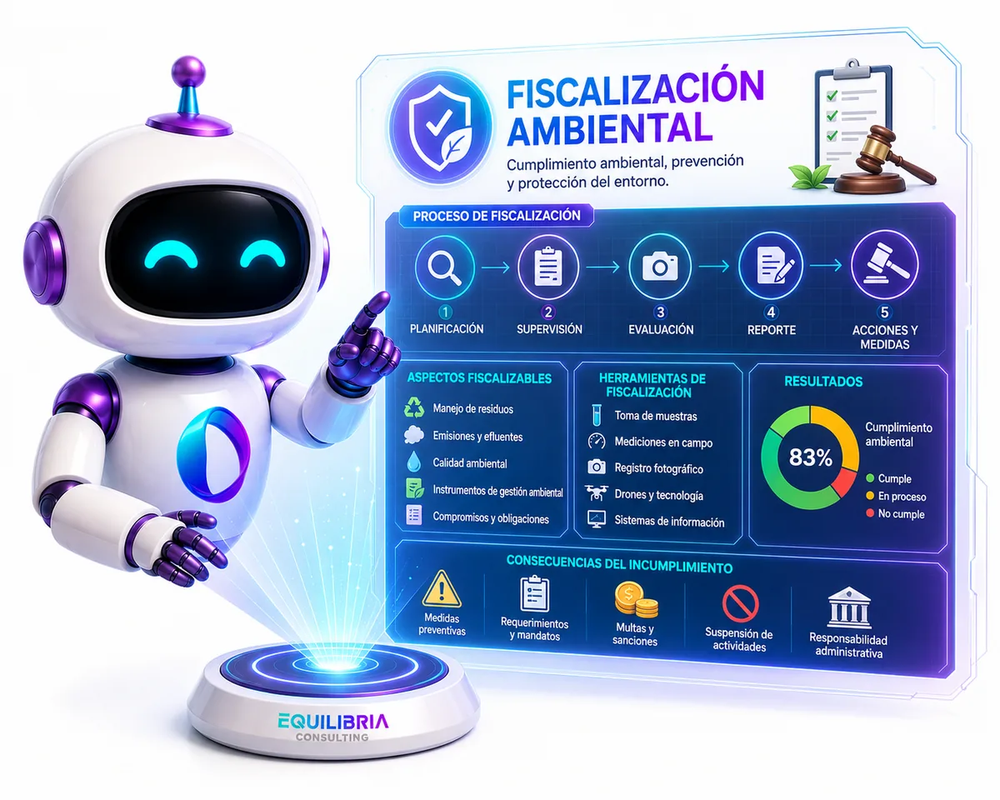

Son las once de la noche. El informe está casi listo, pero todavía falta contrastar el compromiso del instrumento, ordenar los hallazgos y revisar que no se te haya escapado nada. Otra vez.
Sabes perfectamente qué tiene que decir el documento. Tu criterio técnico nunca fue el problema. Lo que se lleva tus días es redactarlo, ordenarlo, cruzarlo con la norma y revisarlo tres veces.
Ahí exactamente es donde la inteligencia artificial cambia las reglas, si sabes usarla.
Cada viernes tomamos un documento real y lo resolvemos con IA.
Nada de teoría suelta. Entramos a un documento del sector, lo trabajamos en vivo y tú lo replicas en simultáneo con tu propio caso.
Informe de supervisión y fiscalización
Plan, acta e informe. Desde la preparación de la supervisión hasta el informe final con los hallazgos redactados y sustentados.
Ficha de obligaciones ambientales fiscalizables
Extraemos las obligaciones del instrumento de gestión y armamos la ficha con IA, sin que se escape ninguna por el camino.
Registro interno de residuos sólidos
El registro de gestión y manejo, armado y mantenido con IA sobre tus propios datos de generación, con sus reportes listos.
Planes de monitoreo ambiental
Agua, suelo, aire, ruido y sedimentos. Estaciones, parámetros, frecuencias y la justificación técnica que los sostiene.
Análisis de instrumentos de gestión ambiental
Cargas el instrumento y la IA te devuelve compromisos, plazos y riesgos ordenados, y te dice en qué página está cada uno.
Revisión de informes ambientales
Los prompts que de verdad detectan lo que falta, en lugar de devolverte un resumen bonito de lo que ya escribiste.
Residuos, monitoreo y fiscalización, con IA aplicada de verdad.



Los tres errores que hacen que la IA te dé resultados inservibles.
Si probaste una vez y te decepcionó, es muy probable que sea por uno de estos tres. Los corregimos en la primera sesión.
Pedirle el documento completo de un solo golpe
Responde bonito y vacío, y encima suena convincente. Es el error más caro porque el resultado parece correcto hasta que alguien lo revisa.
Lo corregimos trabajando por bloques, revisando cada paso antes de avanzar.No darle la norma ni el instrumento
Sin fuente, la IA rellena con lo que le parece razonable. Con tus documentos cargados cita, ubica y se puede verificar.
Lo corregimos cargando el instrumento, la norma y tus datos antes de pedir nada.Usarla como redactor y no como revisor
Su mayor valor no es escribir tu informe: es encontrar lo que a ti se te pasó después de diez horas mirando el mismo expediente.
Lo corregimos con prompts de revisión que buscan vacíos, no resúmenes.El mismo informe, con y sin IA.
| Criterio | Como lo haces hoy | Con el flujo de la comunidad |
|---|---|---|
| Redacción del informe | ✗Dos o tres jornadas | ✓Una tarde, con tu criterio encima |
| Cruce con el instrumento | ✗A mano, página por página | ✓La IA ubica y cita cada compromiso |
| Revisión final | ✗Tus ojos cansados a las 11 pm | ✓Un revisor que no se cansa ni se salta nada |
| Riesgo de omisiones | ✗Aparecen cuando te observan | ✓Aparecen antes de entregar |
| Costo | ✗Tus fines de semana | ✓S/0 en plan gratuito |
Si tu trabajo se entrega en documentos, es para ti.
Que elaboran o revisan instrumentos de gestión y necesitan entregar mejor y más rápido.
Que trabajan con informes, actas y expedientes donde un detalle omitido cuesta caro.
Que mantienen registros, reportes y planes que nunca dejan de pedirles.
Que quieren acelerar su investigación y su redacción técnica sin perder rigor.
La IA no reemplaza al ingeniero ambiental. Reemplaza al ingeniero que no la usa.
Equilibria · Comunidad de IAJilder Michael Castillo Cabrera
Formación práctica en gestión, supervisión y fiscalización ambiental, y creador de herramientas con inteligencia artificial para el sector. Trabaja todos los días con los mismos documentos que tú.
- Experiencia real en supervisión y fiscalización ambiental en el Perú.
- Desarrolla flujos y asistentes con IA para equipos ambientales.
- Más de 900 profesionales forman parte de la comunidad.
Lo que necesitas saber antes de entrar
¿La IA no se inventa las cosas?
¿Sirve para un documento oficial?
¿Puedo subir documentos de mi trabajo?
¿Necesito pagar una IA?
¿Necesito saber programar?
¿Cuándo y dónde son las sesiones?
Tu próximo informe puede costarte horas en vez de días.
Entra al grupo hoy. La próxima sesión es el este viernes: resolvemos un documento real paso a paso y te llevas el prompt y la plantilla a tu trabajo.
Gratis·Sin spam·Sales cuando quieras